This "Hotspot" question focuses on troubleshooting performance issues related to a display method on a form in Dynamics 365 Finance. Display methods are used to show calculated or derived values on forms, but they can sometimes impact performance if not implemented efficiently.
The scenario involves a user reporting slow form load times, and the suspicion is that a display method is the culprit. The task is to determine which actions can help resolve the issue.
Let's analyze each option:
Cache the display method: Caching a display method is a common and effective technique for improving performance. When a display method is cached, its result is stored after the first execution, and subsequent calls return the cached value instead of recomputing it. This can significantly reduce execution time, especially if the display method involves complex calculations or database queries. So, caching the display method would be beneficial in this case. Therefore, the answer to the first option is Yes.
Set the value of the Enabled property to No for any display fields that are not needed: Setting the "Enabled" property to "No" makes the field read-only and visually disables it on the form. However, it does not have a direct impact on whether the display method is executed or not, it is still calculated in the background. Therefore, the answer to the second option is No.
Set the value of the Visible property to No for any display fields that are not needed: Setting the "Visible" property to "No" hides the field on the form. If a field is not visible, and thus not needed, its associated display method will not be executed. This can improve performance by reducing the number of calculations performed when the form loads. Therefore, the answer to the third option is Yes.
Set the value of the Skip property to Yes for any display fields that are not needed: The "Skip" property controls whether a field is included in the tab sequence on the form. Setting it to "Yes" means the field will be skipped when tabbing through the form. However, this property does not affect whether the display method is executed or not. Therefore, the answer to the fourth option is No.
Based on this analysis, caching the display method and setting the "Visible" property to "No" for unneeded fields can help improve performance.
Therefore, the correct answers are Yes for the first option, No for the second option, Yes for the third option, and No for the fourth option.
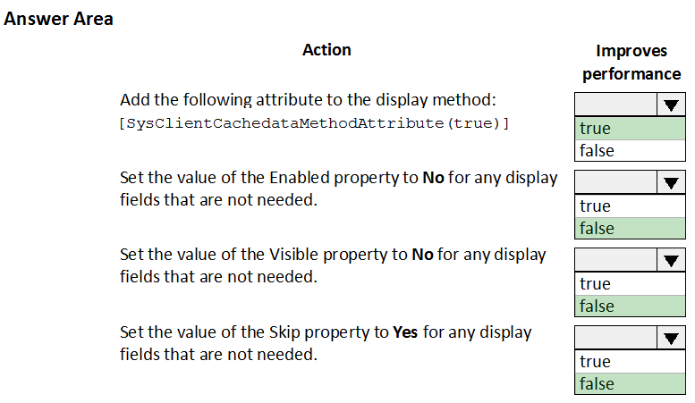
This question is part of a series that explores different solutions for adding a new field to the "SalesTable" form in Dynamics 365 Finance using an extension. This particular question proposes navigating to the user interface forms section for the "SalesTable" form and creating an extension there. We need to determine if this solution is correct.
The core concept here is understanding how to properly create extensions in Dynamics 365 Finance. Extensions are the recommended way to customize existing objects without directly modifying their original definitions. This approach helps maintain the integrity of the base application and simplifies upgrades.
The proposed solution suggests navigating to the user interface forms section for the "SalesTable" form and creating an extension there. This is the correct approach. In the Application Explorer (AOT), you can find the "SalesTable" form under the "User Interface" -> "Forms" node. Right-clicking the "SalesTable" form and selecting "Create extension" will create a new form extension object that you can then use to add the new field.
The question also mentions adding the extension to the "demoExtensions" model. This is a detail about where the extension will be stored, but it doesn't affect the fundamental process of creating the extension itself. As long as the extension is being created, the specific model it belongs to is a secondary concern for this question.
Therefore, the proposed solution of navigating to the user interface forms section for the "SalesTable" form and creating an extension is the correct way to achieve the goal.
Thus, the answer is yes.
This question continues the series about adding a new field to the "SalesTable" form in Dynamics 365 Finance using an extension. This time, the proposed solution is to navigate to the user interface forms section for the "SalesTable" form and create a "customization." We need to determine if this solution is correct.
The core concept remains the same: using extensions to customize existing objects without directly modifying their original definitions. However, the terminology used in the proposed solution is inaccurate and misleading.
In Dynamics 365 Finance, the correct approach is to create an extension, not a "customization." While the term "customization" is used broadly to refer to any modification of the system, in the context of development, and particularly when working with the AOT, "extension" has a specific meaning. It refers to creating a new object that extends an existing one without altering the original.
The proposed solution mentions creating a "customization." This is not a standard or recognized action within the Dynamics 365 Finance development environment, especially when working with form extensions through the AOT. The correct action is to create an extension.
Therefore, the proposed solution of navigating to the user interface forms section for the "SalesTable" form and creating a "customization" is incorrect due to the inaccurate terminology and the fact that "customization" is not a defined action for extending forms in the AOT.
Thus, the answer is no.
This question continues the series about adding a button to a Dynamics 365 Finance form to run a report. This time, the proposed solution is to create a command button and link it to the report using the button's "object" property. We need to determine if this approach is correct.
Let's revisit the types of buttons commonly used in Dynamics 365 forms:
The proposed solution suggests using a command button and linking it to the report via an "object" property. This approach has several issues:
The correct and most straightforward way to add a button that runs a report is to use a menu item button and link it to an output menu item that is associated with the desired report.
Therefore, the proposed solution of using a command button and linking it to the report via an "object" property is not a standard or recommended practice and does not align with the typical usage of command buttons in Dynamics 365.
Thus, the answer is no.
This question is part of a series that explores different solutions for extending the "SalesLineType" class in Dynamics 365 Finance and adding a new method. The specific requirement is to add a method that returns the day of the week for the current system date as an integer.
The proposed solution presents the following code:
"java
[ExtensionOf(classStr(SalesLineType))]
final class SalesLineType_myExtension
{
public int extensionMethodDayOfWeek()
{
return dayOfWk(today());
}
}
"
Let's analyze the code to determine if it meets the requirements:
Based on this analysis, the code technically meets the goal of extending the "SalesLineType" class and adding a method that returns the day of the week for the current date. However, it deviates slightly from the recommended naming convention for extension classes.
Although the code has a minor deviation in the naming convention, it fulfills the main requirement of the question. Therefore, the solution meets the goal.
Thus, the answer is yes.
This question continues the series about extending the "SalesLineType" class in Dynamics 365 Finance and adding a new method that returns the day of the week for the current system date as an integer.
The proposed solution presents the following code:
"java
[ExtensionOf(classStr(SalesLineType))]
final class SalesLineType_Extension
{
public int extensionMethodDayOfWeek()
{
return dayOfWk(today());
}
}
"
Let's analyze the code to determine if it meets the requirements:
Based on this analysis, the code meets the goal of extending the "SalesLineType" class and adding a method that returns the day of the week for the current date as an integer. The code is correctly structured, uses the appropriate attribute, follows the naming conventions, and implements the required logic.
Therefore, the solution meets the goal.
Thus, the answer is yes.
This question continues the series about extending the "SalesLineType" class in Dynamics 365 Finance and adding a new method. The requirement remains the same: add a method that returns the day of the week for the current system date as an integer.
The proposed solution presents the following code:
"java
[ExtensionOf(classStr(SalesLineType))]
final class MySalesLineType_Extension
{
public int extensionMethodDayOfWeek()
{
return dayOfWk(today());
}
}
"
Let's analyze the code to determine if it meets the requirements:
Based on this analysis, the code technically meets the goal of extending the "SalesLineType" class and adding a method that returns the day of the week for the current date as an integer.
Therefore, the solution meets the goal.
Thus, the answer is yes.
This question focuses on modifying table properties in Dynamics 365 Finance through extensions, given that some properties are locked down at the base table level. Understanding which properties can be modified via extensions is crucial for customizing tables while adhering to the extension-based development model.
Let's analyze each option and see if it can be modified in a table extension using the property sheet:
Primary index: The primary index is a fundamental part of a table's structure and is typically defined at the base table level. It cannot be changed in a table extension.
Created by: This property, along with "CreatedDateTime", "ModifiedBy", and "ModifiedDateTime", controls the audit fields that track who created and last modified a record. These properties can be modified in a table extension.
Configuration key: Configuration keys are used to enable or disable certain features or modules. While they can influence the behavior of tables, the configuration key property itself cannot be modified in a table extension.
Table group: The table group property categorizes tables for organizational purposes. However, you cannot change the table group in a table extension, as this would fundamentally alter the table's intended purpose and could lead to inconsistencies.
Based on this analysis, only the "Created by" property (along with the other audit fields) can be modified in a table extension using the property sheet.
Therefore, the correct answer is Created by.
This question involves extending an existing enumeration named "truckStatus" and handling the new values in code. The enumeration initially has three statuses: Empty, Loaded, and Completed. The task is to add two new statuses, Quarantine and InTransit, and ensure the code handles them correctly.
Let's analyze each option:
Since the question does not specify whether you can modify the original code, both A and C are correct.
If you can modify the original code, option C is the most straightforward and preferred solution.
If you cannot modify the original code, option A is the correct solution as it leverages extensions and event handlers to add the new logic without altering the original code.
Because we don't know if we can modify the original code, and because option A works in both cases, the safest answer is A.
This question is another one in the series about adding a new status field to the "SalesTable" form in Dynamics 365 Finance using an extension. This time, the proposed solution is to navigate to the Visual Studio user interface forms extensions section for the "SalesTable" form and create an extension there. We need to determine if this is correct.
The key to understanding this question lies in recognizing the distinction between creating an extension of a base object and creating an extension of an existing extension. In Dynamics 365 Finance, you typically create extensions of base objects (like forms, tables, etc.) to customize them without modifying the originals. You don't create extensions of extensions.
The proposed solution suggests navigating to the "forms extensions" section. This implies that you are trying to extend an existing extension of the "SalesTable" form, which is not the correct or standard approach. You should always create extensions from the original base object, not from another extension.
To add a new field to the "SalesTable" form using an extension, you should navigate to the "User Interface" -> "Forms" section in the Application Explorer (AOT), find the "SalesTable" form, right-click it, and select "Create extension." This will create a new form extension object where you can add your customizations.
Therefore, the proposed solution of navigating to the "forms extensions" section is incorrect. You should be creating an extension from the base "SalesTable" form, not from an existing extension.
Thus, the answer is no.
This question focuses on the fundamental requirements for creating an extension class in Dynamics 365 Finance. Extension classes are a key part of the extensibility framework, allowing developers to add functionality to existing classes without modifying the original code directly.
Let's analyze each option to determine which action is essential for creating an extension class:
Based on this analysis, the most important action when creating an extension class is to decorate it with the "ExtensionOf" attribute, specifying the class being extended.
Therefore, the correct answer is Decorate the class with the ExtensionOf attribute.
This question is part of a series that involves extending the "truckStatus" enumeration in Dynamics 365 Finance and handling the new values in code. The enumeration initially has three statuses: Empty, Loaded, and Completed. The task is to add two new statuses, Quarantine and InTransit, and modify the code accordingly.
The proposed solution suggests adding a post handler to the method that checks the enumeration and using a range comparison for the new enumeration values. We need to determine if this solution is correct.
Let's analyze the proposed solution:
The correct approach to handle the new enumeration values is to extend the enumeration and add a post-event handler to the method containing the "switch" statement. In the post-event handler, you should check for the new enumeration values directly using their symbolic names (e.g., "truckStatus::Quarantine", "truckStatus::InTransit") rather than relying on range comparisons.
Therefore, the proposed solution of using a range comparison for the new enumeration values is not a reliable or recommended practice.
Thus, the answer is no.
This question continues the series about extending the "truckStatus" enumeration in Dynamics 365 Finance and handling the new values in code. The task remains the same: add two new statuses, Quarantine and InTransit, and ensure the code handles them correctly.
The proposed solution this time suggests adding a post handler to the method that checks the enumeration and using the integer value of the enumeration for handling the new values.
Let's analyze this solution:
The correct approach is to extend the enumeration and add a post-event handler to the method containing the "switch" statement. In the post-event handler, you should check for the new enumeration values directly using their symbolic names (e.g., "truckStatus::Quarantine", "truckStatus::InTransit").
Therefore, the proposed solution of using the integer value of the enumeration is not a reliable or recommended practice and can lead to errors.
Thus, the answer is no.
This question is yet another variation on the scenario involving extending the "truckStatus" enumeration in Dynamics 365 Finance and handling the new values, Quarantine and InTransit, in the code.
The proposed solution suggests adding a post handler to the method that checks the enumeration and handling the new enumeration values using the enumeration value itself (not its integer representation).
Let's analyze this solution:
The proposed solution accurately describes the proper way to extend an enumeration and handle the new values in code using extensions and event handlers. By creating an extension of the "truckStatus" enumeration and adding a post-event handler to the method with the "switch" statement, you can add logic to specifically handle the new "Quarantine" and "InTransit" cases without modifying the original code.
Therefore, the proposed solution of adding a post handler and using the enumeration value directly is the correct and recommended approach.
Thus, the answer is yes.
This question is another variation on the scenario involving adding a new status field to the "SalesTable" form in Dynamics 365 Finance using an extension. This time, the proposed solution is to add a new form object to the project and name it "SalesTable.Extension".
This proposed solution is fundamentally incorrect. In Dynamics 365 Finance, you do not create extensions by simply adding a new object and naming it in a specific way. Extensions are created through a specific process within the Application Explorer (AOT).
To create an extension of an existing form like "SalesTable", you need to:
This process creates a new form extension object that is linked to the original "SalesTable" form. You can then add your customizations, such as the new status field, to this extension object.
Simply adding a new form object and naming it "SalesTable.Extension" does not create a valid extension. It creates a standalone form that is not connected to the "SalesTable" form in any way.
Therefore, the proposed solution does not meet the goal of creating an extension for the "SalesTable" form.
Thus, the answer is no.
This drag-and-drop question focuses on creating an event handler in Dynamics 365 Finance to validate data entered into a custom field. The scenario involves validating the length of Vehicle Identification Numbers (VINs) entered into a custom field named "VIN" on the "CustTable" when records are saved.
Let's analyze the provided actions and determine their logical sequence in creating the event handler:
Based on this analysis, the logical sequence of actions is to first create a new class, then copy the event handler subscription code (specifically for the "OnValidateWrite" event, as a post-event handler), and finally implement the validation logic within the event handler method.
Therefore, the correct order is: Create a new class, Copy the post-event handler subscription code for the OnValidateWrite event, Implement the validation logic.
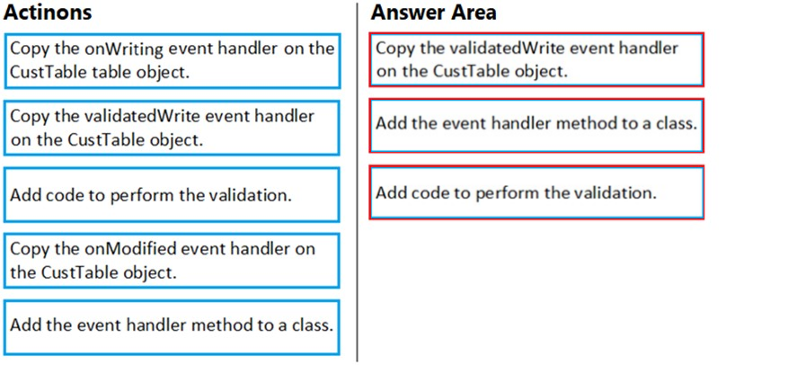
This "Hotspot" question focuses on implementing a vendor risk rating functionality in Dynamics 365 Finance. The scenario outlines specific requirements for how the risk rating should be stored, used, and displayed alongside the credit rating on the Vendor form.
Let's analyze the options for each step:
Step 1: Storing the risk rating
Step 2: Linking the risk rating to the vendor
Step 3: Ensuring Credit Limit and Risk Rating are used together
Considering the requirement that the risk rating must accompany the credit rating when used, creating a field group that contains both fields is a good way to achieve this visually on the form. While there is no perfect solution, using a field group is the closest to what the requirements demand.
Therefore, the correct answers are: Create a new enum base data type, Create a table extension, and Use a field group.
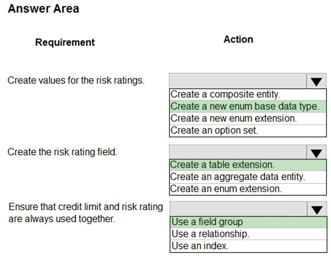
This question focuses on identifying extension changes made to a base form in Dynamics 365 Finance. The scenario assumes that a company has created an extension that modifies a base form, and the task is to find all the changes introduced by this extension.
Let's analyze each option:
Based on this analysis, options C and D are the most relevant. However, the question asks for ways to identify changes made by a specific extension. Option C helps identify all extensions related to a form. Option D helps identify the changes within a specific extension. Since the question mentions a company that "has an extension" we can deduce that they have only one extension. Therefore, both options C and D could work, but option D is the most direct way to achieve the specific goal stated in the question.
Therefore, the correct answers are Right-click the base form and select view references and In the search bar on the form extension element, enter the text e:.
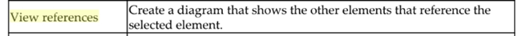
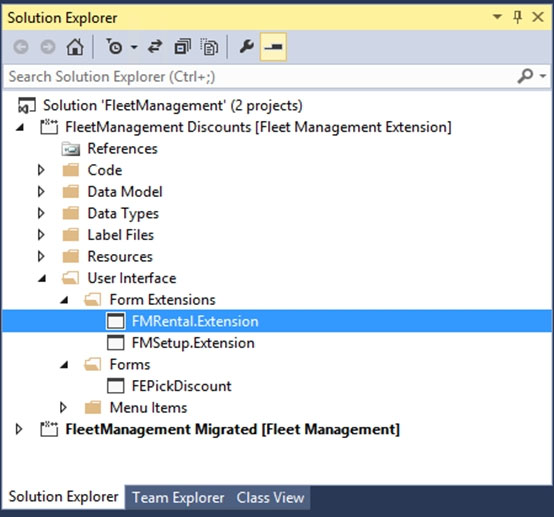
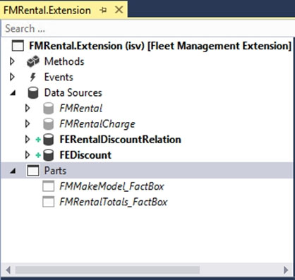
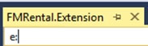
This question continues the series about extending the "SalesLineType" class in Dynamics 365 Finance to add a new method that returns the day of the week for the current system date as an integer.
The proposed solution presents the following code:
"java
[ExtensionOf(classStr(SalesLineType))]
public class SalesLineType_Extension
{
public int extensionMethodDayOfWeek()
{
return dayOfWk(today());
}
}
"
Let's analyze the code to determine if it meets the requirements:
The code has a critical error: the extension class is declared as "public" instead of "final". This violates the rules for creating extension classes in Dynamics 365 Finance.
Therefore, the solution does not meet the goal because the extension class is not defined correctly.
Thus, the answer is no.
This question revolves around modifying properties of Extended Data Types (EDTs) in Dynamics 365 Finance using extensions. The scenario presents two EDTs: "AccountBase" (a base EDT) and "AccountId" (derived from "AccountBase"). The task is to determine which operation is possible when modifying these EDTs through extensions.
Let's analyze each option:
Based on this analysis, the only possible operation is to create an extension for the base EDT "AccountBase" and modify the "Form Help" property.
Therefore, the correct answer is Create an extension for AccountBase and modify the Form Help property.
This question focuses on the fundamental requirements for creating an extension class in Dynamics 365 Finance. Extension classes are a key part of the extensibility framework, allowing developers to add functionality to existing classes without modifying the original code directly.
Let's analyze each option to determine which action is essential for creating an extension class:
Based on this analysis, the most important action when creating an extension class is to mark it as "final". Additionally, the class needs to be decorated with the "ExtensionOf" attribute.
Therefore, the correct answer is Mark the class as final.
This question is part of a series that deals with extending enumerations in Dynamics 365 Finance. The scenario involves a custom enumeration named "CarType" with elements Sedan and SUV. The goal is to extend this enumeration and add a new element named MUV.
The proposed solution suggests setting the "isExtensible" property to "true" for the "CarType" enumeration and creating a new enumeration to add the MUV element.
Let's analyze this solution:
Setting "isExtensible" to "true": This part of the solution is correct if the "CarType" enumeration is not already extensible. The "isExtensible" property determines whether an enumeration can be extended. If it's set to "false", you cannot add new elements to it through extensions. Since "CarType" is mentioned as a custom enumeration, you are allowed to change this property. However, if it were a standard Microsoft enum, it would likely already be marked as extensible if it was designed to be extended.
Creating a new enumeration to add the MUV element: This part of the solution is incorrect. To extend an existing enumeration, you don't create a new enumeration. Instead, you create an extension of the existing enumeration. This extension is a separate object that adds new elements to the original enumeration without modifying it directly.
The correct approach to achieve the goal is to:
Therefore, the proposed solution does not meet the goal because it suggests creating a new enumeration instead of extending the existing one.
Thus, the answer is no.
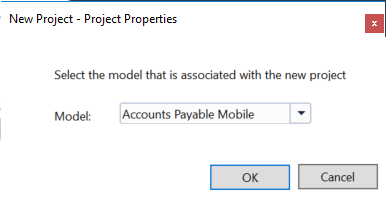
This question continues the series about extending the "CarType" enumeration in Dynamics 365 Finance. The goal remains the same: extend "CarType" and add a new element named MUV.
The proposed solution suggests setting the "isExtensible" property to "false" for the "CarType" enumeration and creating a new enumeration to add the MUV element.
Let's analyze this solution:
Setting "isExtensible" to "false": This part of the solution is incorrect and goes against the fundamental requirement of extending the enumeration. The "isExtensible" property determines whether an enumeration can be extended. Setting it to "false" would prevent you from adding new elements to the enumeration through extensions, which is the opposite of what we want to achieve.
Creating a new enumeration to add the MUV element: As discussed in previous questions, this is also incorrect. To extend an existing enumeration, you don't create a new enumeration. You create an extension of the existing enumeration.
The correct approach, as established before, is to:
Therefore, the proposed solution does not meet the goal because it sets the "isExtensible" property to "false" and suggests creating a new enumeration instead of extending the existing one.
Thus, the answer is no.
This question is another variation on the scenario involving extending the "CarType" enumeration in Dynamics 365 Finance. The goal is to add a new element named MUV to the "CarType" enumeration.
The proposed solution suggests setting the "isExtensible" property to "true" for the "CarType" enumeration and adding the MUV element directly to the "CarType" base enumeration.
Let's analyze this solution:
Since the question states that this is a custom enumeration, it implies that you have the ability to modify the base "CarType" enumeration directly. Therefore, adding the MUV element directly to the base enumeration is a valid approach in this specific case.
However, it's important to note that if the "CarType" enumeration belonged to a different model (e.g., an ISV solution or a Microsoft model), you would not be able to modify it directly. In that case, you would have to create an extension.
Because the question specifies that "CarType" is a custom enumeration, it's safe to assume that you can modify it directly.
Therefore, the solution meets the goal.
Thus, the answer is yes.
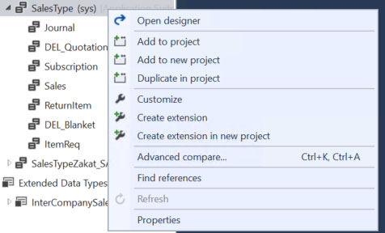

This drag-and-drop question focuses on controlling the extensibility of methods within a class in Dynamics 365 Finance using attributes. Understanding how to use these attributes is crucial for designing classes that can be extended and customized in a controlled and predictable manner.
Let's analyze each requirement and determine the appropriate attribute:
Allow the method to be extended by using Chain of Command (CoC), but prevent subscription to pre- and post-events:
Prevent the method from being extended by using Chain of Command (CoC):
Allow the method to be extended by using Chain of Command (CoC) without calling next:
Based on this analysis:
Therefore, you should drag "[Wrappable(false)]" to the second requirement and "[Replaceable]" to the third requirement. The first requirement cannot be fulfilled with the given options.
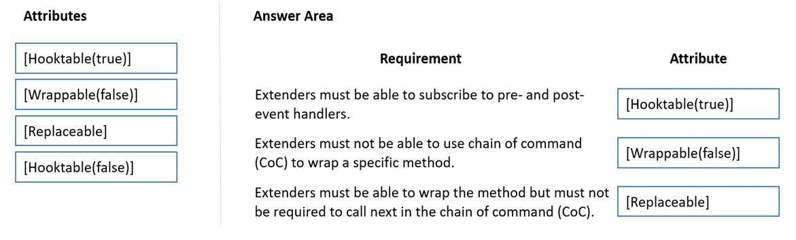
This question focuses on modifying table properties in Dynamics 365 Finance through extensions, given that some properties are locked down at the base table level. Understanding which properties can be modified via extensions is crucial for customizing tables while adhering to the extension-based development model.
Let's analyze each option and see if it can be modified in a table extension using the property sheet:
Based on this analysis, only the "Modified date time" property (and other audit-related properties like "CreatedBy", "CreatedDateTime", and "ModifiedBy") can be modified in a table extension using the property sheet.
Therefore, the correct answer is Modified date time.
This question continues to explore modifying properties of Extended Data Types (EDTs) in Dynamics 365 Finance using extensions. We have the same two EDTs as before: "AccountBase" (a base EDT) and "AccountId" (derived from "AccountBase"). The task is to determine which operation is possible when modifying these EDTs through extensions.
Let's analyze each option:
Based on this analysis, the only possible operation is to create an extension for the base EDT "AccountBase" and increase its field size.
Therefore, the correct answer is Create an extension for AccountBase and increase the field size.
This question focuses on ensuring referential integrity between two tables in Dynamics 365 Finance: "EmplTable" (presumably holding employee information) and "EmplBankAccount" (presumably holding employee bank account information). The requirement is that when an employee record is deleted from "EmplTable", the corresponding bank account record in "EmplBankAccount" should also be automatically deleted.
Let's analyze each option:
Therefore, to achieve the desired behavior of automatically deleting bank account records when a corresponding employee record is deleted, you need to select the foreign key relation properties from the child table ("EmplBankAccount") and set the "OnDelete" property to "Cascade".
Thus, the correct answers are Select the foreign key relation properties from EmplBankAccount and Set the value of the OnDelete property to Cascade.
This question is part of a series that involves customizing Extended Data Types (EDTs) in Dynamics 365 Finance. The scenario presents two EDTs: "BasicCalendarId" and "CalendarName". The "WorkCalendar" table has a column named "BasicCalendarID" that uses the "BasicCalendarId" EDT. The goal is to increase the length of this column using an extension.
The proposed solution suggests creating an extension for "CalendarName".
Let's analyze the solution:
The "WorkCalendar.BasicCalendarID" column uses the "BasicCalendarId" EDT. Therefore, to increase the length of this column, you need to modify the "BasicCalendarId" EDT, not the "CalendarName" EDT. Creating an extension for "CalendarName" will not have any effect on the "BasicCalendarID" column.
The correct approach would be to:
Therefore, the proposed solution of creating an extension for "CalendarName" does not meet the goal.
Thus, the answer is no.
This question continues the series about customizing Extended Data Types (EDTs) in Dynamics 365 Finance. The scenario remains the same: we have the "BasicCalendarId" and "CalendarName" EDTs, and the "WorkCalendar" table has a column "BasicCalendarID" that uses the "BasicCalendarId" EDT. The goal is to increase the length of this column using an extension.
The proposed solution suggests creating a derived EDT for "CalendarName".
Let's analyze this solution:
The "WorkCalendar.BasicCalendarID" column uses the "BasicCalendarId" EDT, not the "CalendarName" EDT. Therefore, modifying the "CalendarName" EDT, whether by creating a derived EDT or an extension, will have no effect on the "BasicCalendarID" column.
Even if we were to consider the likely typo and assume the solution meant to say "Create a derived EDT for "BasicCalendarId"", this would still be incorrect. You cannot change the string size (length) of a derived EDT. You can only modify the string size of a base EDT through an extension.
Therefore, the proposed solution of creating a derived EDT for "CalendarName" (or even "BasicCalendarId") does not meet the goal.
Thus, the answer is no.
This question is yet another variation on the scenario involving customizing Extended Data Types (EDTs) in Dynamics 365 Finance. We still have the "BasicCalendarId" and "CalendarName" EDTs, and the "WorkCalendar" table with its "BasicCalendarID" column using the "BasicCalendarId" EDT. The goal remains the same: increase the length of this column using an extension.
The proposed solution suggests creating a derived EDT for "BasicCalendarId".
Let's analyze this solution:
Creating a derived EDT for "BasicCalendarId" would create a new EDT that inherits properties from "BasicCalendarId". However, you cannot change the string size (length) of a derived EDT. String size modifications are only allowed on base EDTs through extensions. Therefore, creating a derived EDT will not allow you to increase the length of the "WorkCalendar.BasicCalendarID" column.
The correct approach, as established in previous questions, is to create an extension for the "BasicCalendarId" EDT and increase its "StringSize" property in the extension.
Therefore, the proposed solution of creating a derived EDT for "BasicCalendarId" does not meet the goal.
Thus, the answer is no.
This "Hotspot" question focuses on choosing the correct types of unmapped fields for data entities in Dynamics 365 Finance. Unmapped fields are fields that are not directly bound to a physical field in a table. There are two main types of unmapped fields: computed fields and virtual fields. Understanding the differences between these types is crucial for designing data entities effectively.
Let's analyze each requirement and determine the appropriate field type:
During read, data is computed by SQL and is fetched directly from the view:
Value is generated by an SQL view computed column:
Value is generated by custom X++ code:
Is a non-persisted field:
Based on this analysis:
Therefore, the correct answers are Computed, Computed, Virtual, and Virtual.
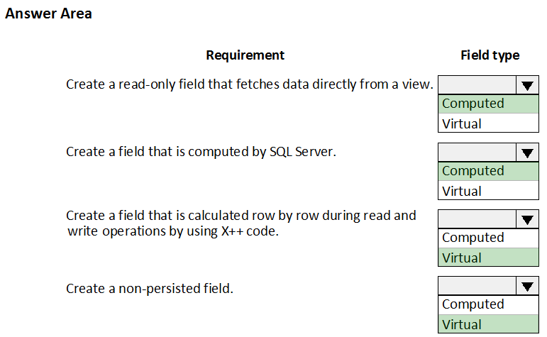
This question centers on enhancing a Dynamics 365 Finance form that displays customer records with related sales total information. The form uses a "listpage" control, which is a common pattern for displaying lists of records. The task is to determine the most appropriate way to display the related sales totals for the selected customer.
Let's analyze each option:
Based on this analysis, the most appropriate way to display the related sales total information for the selected customer is to use a FactBox.
Therefore, the correct answer is a factbox.
This question focuses on creating and configuring a new model in Dynamics 365 Finance for extending objects from the Application Foundation package. Understanding how to set up models correctly is crucial for organizing and managing customizations in an extension-based development approach.
Let's analyze each option:
Based on this analysis, the correct actions for creating and configuring a new model for extending Application Foundation objects are to create a new model that builds into its own separate assembly and to reference the Application Foundation package when creating the model.
Therefore, the correct answers are Reference the Application Foundation package when creating the extension model and Create a new model that builds into its own separate assembly.
This question focuses on modifying properties of Extended Data Types (EDTs) in Dynamics 365 Finance through extensions, specifically when the EDT is derived from base data types. Understanding which properties can be modified via extensions is crucial for customizing EDTs while adhering to the extension-based development model.
Let's analyze each option:
Based on this analysis, the properties that can be modified in an EDT extension that is derived from base data types are String Size, Form help, and Label.
Therefore, the correct answers are String Size, Form help, and Label.
This question focuses on modifying table properties in Dynamics 365 Finance through extensions, given that some properties are locked down at the base table level. Understanding which properties can be modified via extensions is crucial for customizing tables while adhering to the extension-based development model.
Let's analyze each option and see if it can be modified in a table extension using the property sheet:
Based on this analysis, only the Modified date time property (and other audit-related properties like "CreatedBy", "CreatedDateTime", and "ModifiedBy") can be modified in a table extension using the property sheet.
Therefore, the correct answer is Modified date time.

This "Hotspot" question presents a code snippet in Dynamics 365 Finance and asks you to determine the output of the "info()" method calls. The code involves passing a table buffer ("tmpFrmVirtual") and an integer ("salesQty") to a method named "updateValues", which modifies the values. Understanding how parameters are passed (by value or by reference) is crucial to correctly predict the output.
Here's a breakdown of the code and the concepts involved:
Code:
"java
public class MyClass
{
public static void main(Args _args)
{
MyClass myClass = new MyClass();
myClass.run();
}
public void run()
{
TmpFrmVirtual tmpFrmVirtual;
int salesQty = 5;
tmpFrmVirtual.Id = 'SID1234';
// Call the updateValues method
this.updateValues(tmpFrmVirtual, int2str(salesQty));
info(tmpFrmVirtual.Id);
info(int2str(salesQty));
}
public void updateValues(TmpFrmVirtual _tmpFrmVirtual, str _salesQty)
{
TmpFrmVirtual tmpLocalFrmVirtual = _tmpFrmVirtual;
int localSalesQty = str2int(_salesQty);
tmpLocalFrmVirtual.Id = 'SID1234-Updated';
localSalesQty = 10;
}
}
"
Concepts:
Analysis:
"tmpFrmVirtual": The "tmpFrmVirtual" table buffer is passed to the "updateValues" method. Inside the method, "tmpLocalFrmVirtual" is assigned the same buffer. Since table buffers are passed by reference, any changes to "tmpLocalFrmVirtual.Id" will also be reflected in "tmpFrmVirtual.Id". Therefore, after the call to "updateValues", "tmpFrmVirtual.Id" will be "SID1234-Updated".
"salesQty": The "salesQty" integer is converted to a string using "int2str()" before being passed to "updateValues". Inside the method, the string is converted back to an integer and assigned to "localSalesQty". This "localSalesQty" is then modified to 10. However, since integers are passed by value and additionally, the value was converted to a string when passing it to the method, these changes do not affect the original "salesQty" variable in the "run" method. Therefore, "salesQty" will remain 5.
Output:
Therefore, the correct answers are SID1234-Updated for the first "info()" call and 5 for the second "info()" call.
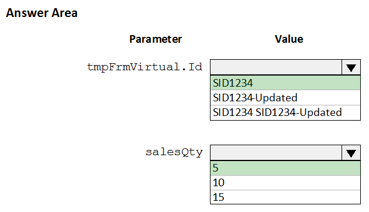
This question focuses on selecting records from a table in Dynamics 365 Finance using embedded SQL, specifically ordering the results based on a particular field. The scenario involves a table named "FMVehicle" with a field named "VehicleId" and an index named "VehicleIdIdx" on that field. The goal is to select all records from the table in ascending order based on the "VehicleId" field using a table buffer named "vehicle".
Let's analyze each option:
Based on this analysis, option B is the most direct and correct way to select all records and order them by "VehicleId" in ascending order. While option C would technically order the results correctly, it doesn't select all fields as implied by the question.
Therefore, the correct answer is "select vehicle order by VehicleId;".
This question focuses on using attributes in Dynamics 365 Finance to control the behavior of the compiler, specifically to cause compilation to fail if a specific method is called. This is a useful technique for deprecating methods or preventing their use in certain contexts.
Let's analyze each option:
Based on this analysis, the correct attribute to use for causing compilation to fail when a specific method is called is "SysObsoleteAttribute".
Therefore, the correct answer is SysObsoleteAttribute.
This question focuses on selecting records from a table in Dynamics 365 Finance using embedded SQL, specifically ordering the results based on a particular field and utilizing an existing index. The scenario involves a table named "FMVehicle" with a field named "VehicleId" and an index named "VehicleIdIdx" on that field. The goal is to select all records from the table in ascending order based on the "VehicleId" field using a table buffer named "vehicle".
Let's analyze each option:
Based on this analysis, the correct approach is to use the "order by" clause with the field name "VehicleId". By default, "order by" sorts in ascending order. Providing the "index" hint is also valid, but it's important to provide the correct index name ("VehicleIdIdx").
Therefore, a correct answer would be "select vehicle order by VehicleId;".
Option B is also a correct solution: "select vehicle index VehicleIdIdx;". While using the "order by" clause is generally recommended for clarity and to ensure the desired ordering, using the index hint "index VehicleIdIdx" will, in this specific case, also result in an ascending order based on "VehicleId". This is because the "VehicleIdIdx" index is likely a unique, clustered, or primary index on the "VehicleId" field, which inherently defines the physical sort order of the data.
So, both options B and the statement "select vehicle order by VehicleId;" are valid solutions, but the latter is generally preferred for clarity.
Let's break down this Dynamics 365 Finance code extension question together. It's presenting a scenario where we have a base class called "PurchTotals" and we're looking at an extension class, "PurchTotals_Extension". The question seems designed to test our understanding of how method wrapping and the Chain of Command (CoC) pattern work within the context of class extensions in X++.
The core concept here is extending functionality without directly modifying the original source code. We're essentially "wrapping" additional logic around an existing method, "calculatePrice" in this case. The extension class uses the "[ExtensionOf(classStr(PurchTotals))]" attribute, which tells the system that this class extends the functionality of "PurchTotals".
Now, let's look at the method "calculatePrice" within the extension class. It takes a real number as an argument ("_purchCalcPriceContext"). The "next calculatePrice(_purchCalcPriceContext)" statement is crucial. It's how we invoke the original "calculatePrice" method from the "PurchTotals" class, or any other extension class in the chain. It is also how we create a chain of command. The method in the extension class is designed to execute some code before (line 12) and after (lines 14-16) calling the original method through the "next" keyword.
The question then presents four statements, and we need to determine if they are true or false based on the provided code and our understanding of Dynamics 365 Finance development principles. It also includes lines 18-20 which will be used in the fourth statement.
With this understanding of the question's context, let's move on to analyzing each statement.
The first statement asks if the extension class overrides the "calculatePrice()" method in the base class. In the context of method wrapping in Dynamics 365, using "next calculatePrice" within the extension method doesn't technically override the base method in the traditional object-oriented sense. Instead, it adds to it, creating a chain of execution. However, effectively, the extension's version will be executed, followed by the original method, giving the impression of an override. Thus, the extension method effectively replaces the original method. So, the statement is true.
The second statement focuses on whether we can modify the logic of the "calculatePrice()" method in the base class from the extension class. Given what we know about CoC, this statement is also true. We can indeed add code that executes before and after the original method, thus effectively modifying its overall behavior. The line "real basePrice = next calculatePrice(_purchCalcPriceContext);" shows that the original "calculatePrice" method is called, but the extension also has the opportunity to execute code before and after that call, thereby influencing or modifying the overall process.
The third statement asserts that the "calculatePrice()" method in the extension class is an example of method wrapping. This is accurate. The structure of the "calculatePrice" method in "PurchTotals_Extension", particularly the use of "next calculatePrice", perfectly aligns with the concept of method wrapping. We are wrapping additional logic around the original method call, a hallmark of method wrapping in this environment. Thus, this statement is also true.
Finally, the fourth statement asks if adding conditional logic at line 18 is allowed. The question does not state what the conditional logic is, but it can be assumed it's to alter the behavior of the extension method. While we generally must call "next" in a method, adding conditional logic, such as an if statement, is permissible as long as it does not affect the calling of the "next" statement. As it is not stated that the conditional logic will prevent the calling of the "next" statement, we can only assume that it will not, and the "next" statement will be called. Thus, the statement is true.
Therefore, the correct answers are: Yes, Yes, Yes, and Yes.
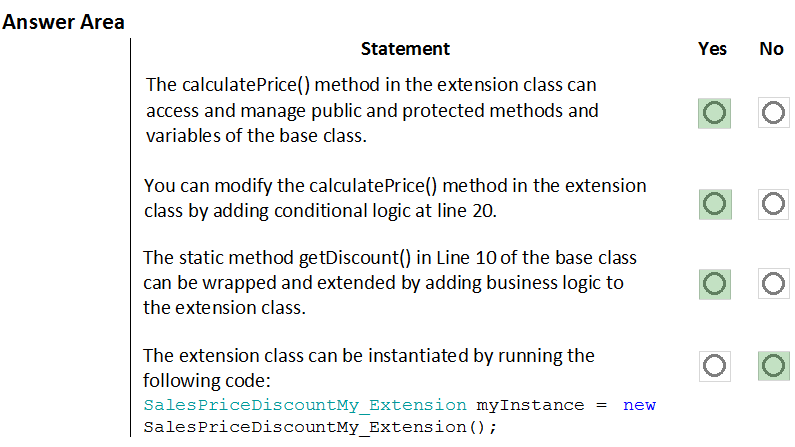
This "Hotspot" question presents a code snippet in Dynamics 365 Finance and asks you to determine the output of various calls to a method named "tryMethod". The method contains a "try-catch-finally" block and uses the "info()" method to output messages. The key to answering this question correctly lies in understanding how exceptions, the "retry" statement, and the "finally" clause work in X++.
Here's a breakdown of the code and the relevant concepts:
Code:
"java
private void tryMethod(int _value1, int _value2)
{
try
{
info("One");
if (_value1 == 2 || _value2 == 2)
{
info("Two");
}
else
{
info("Three");
}
_value1 div _value2;
}
catch
{
info("Four");
if (_value1 == 3)
{
retry;
}
}
finally
{
info("Five");
}
}
"
Concepts:
Analysis:
Let's trace the execution for each call:
"tryMethod(5, 2)":
"tryMethod(4, 0)":
"tryMethod(2, 0)":
"tryMethod(3, 0)":
Based on this analysis, the correct answers are:
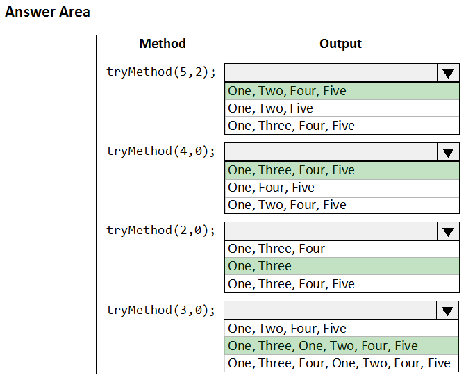
This "Hotspot" question presents a code snippet in Dynamics 365 Finance and asks you to evaluate the truthfulness of statements about the code's behavior. The code involves date manipulation using built-in functions.
Here's a breakdown of the code and the concepts involved:
Code:
"java
date myDate;
date myDate2;
str myDateStr;
myDate = 1\1\2022;
myDate2 = myDate + 1;
myDateStr = int2str(date2num(myDate));
myDate = str2date(myDateStr, 123);
"
Concepts:
Analysis:
Let's analyze each statement:
"myDate2" will contain the value 1/2/2022:
"myDate" will contain the value 1/1/1900:
The code will generate a compilation error:
Based on this analysis, the correct answers are:
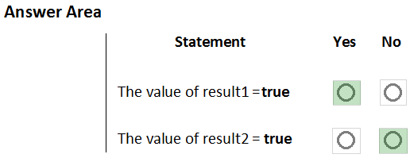
This question focuses on creating a unit test class in Dynamics 365 Finance using the SysTest framework within Visual Studio. Specifically, it asks which attributes can be used to decorate the test class itself.
Let's analyze each option:
Based on this analysis, the three attributes that can be used to create a unit test class in the SysTest framework are "Priority", "Owner", and "Test Property".
Therefore, the correct answers are Priority, Owner, and Test Property.
This "Hotspot" question involves creating an extension class in Dynamics 365 Finance and calling a static method from another class. The scenario provides a base class named "UnitConv" and requires you to create an extension class with a static method to convert miles to kilometers.
Let's analyze the options for each part of the question:
Part 1: Creating the extension class
Based on the requirement that we must create an extension class, the best option from the choices provided is "final class UnitConv_MyExtension". However, it's important to note that the most appropriate name would be "UnitConv_Extension".
Part 2: Calling the static method
Therefore, the correct answers are "final class UnitConv_MyExtension" (with the caveat that "UnitConv_Extension" would be better) and "var km = UnitConv::miToKm(62.1371);".
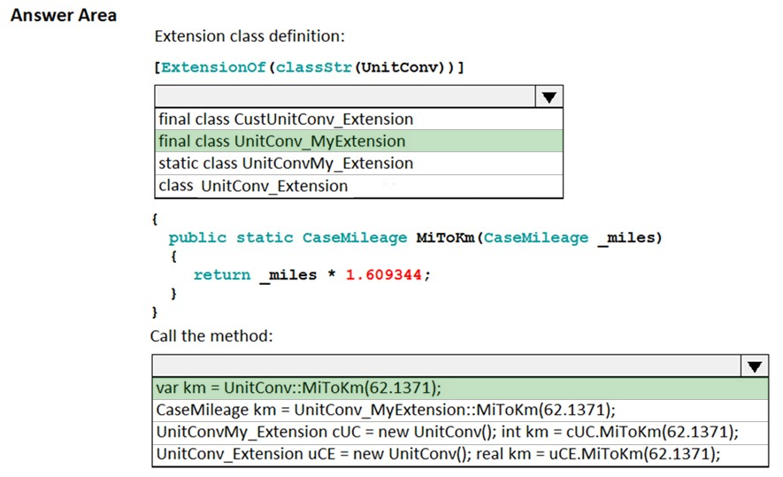